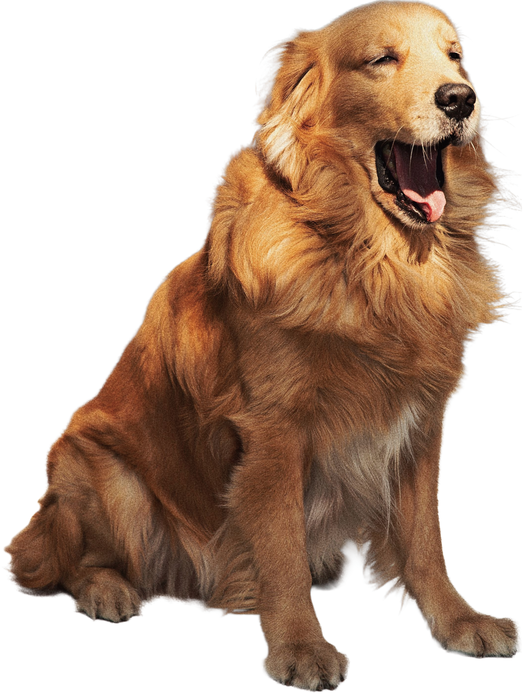
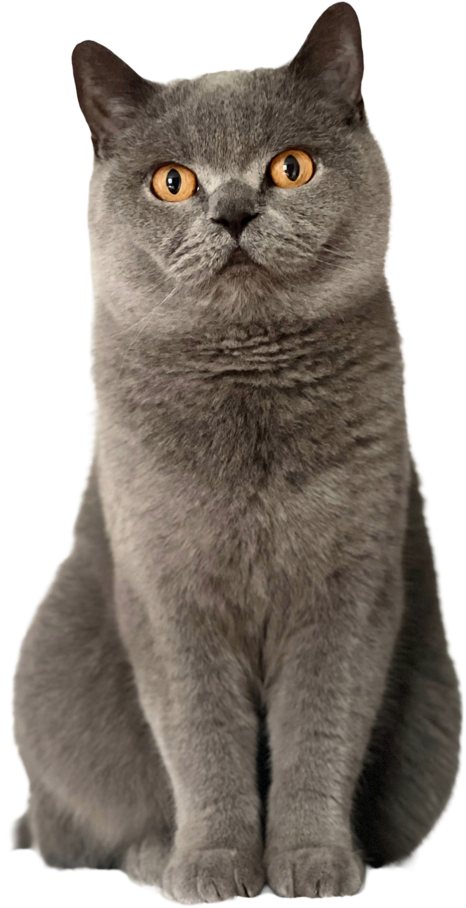
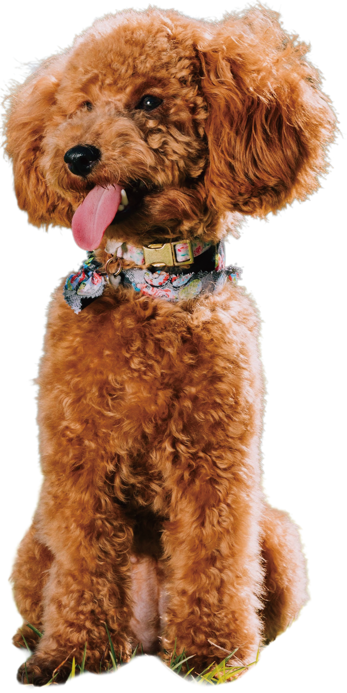
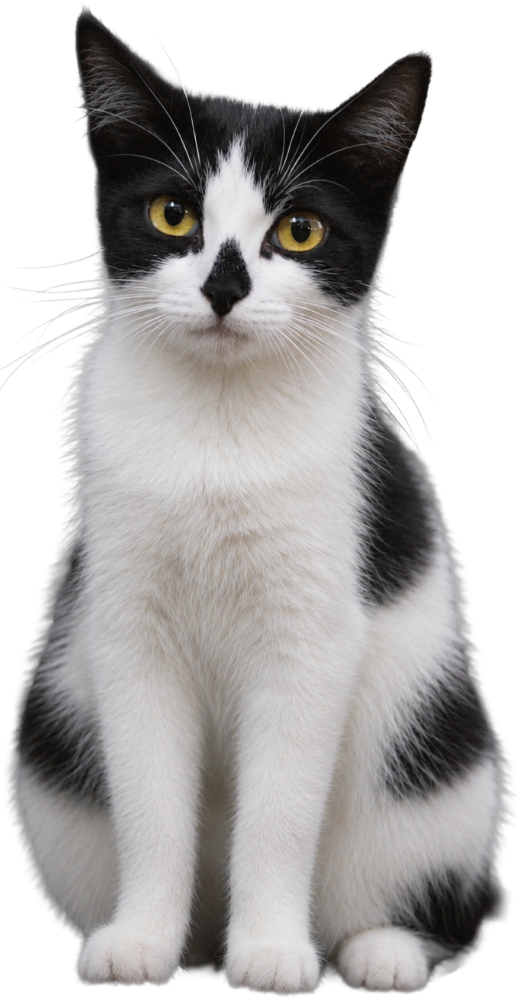
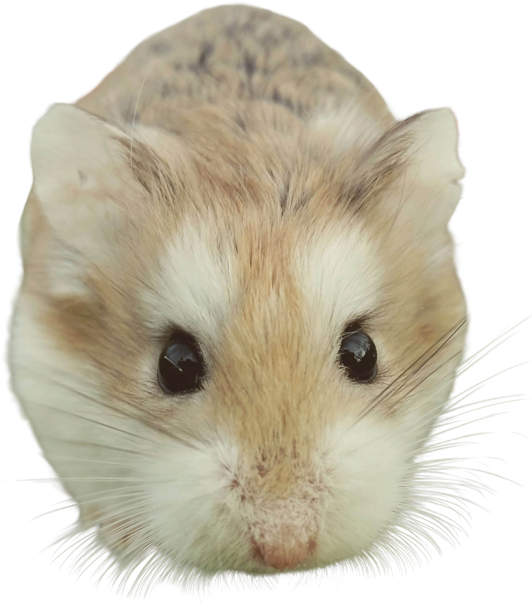

Hi, I'm Lucky. I am friendly and gentle, loves playing fetch with kids.

Dog
Golden Retriever
2 years
Male
Yes
No
Lucky needs daily outdoor exercise, regular walks and plenty of playtime to maintain his physical health. His thick coat requires brushing several times a week to prevent tangles and excessive shedding. As a large breed, he should receive a balanced diet and regular health check-ups to monitor his joint health. His future owner should consider arranging neutering with a veterinarian.
Hi, I'm Mochi. I am quiet and calm. My favourite spot is by the window.

Cat
British Shorthair
1 years
Female
Yes
Yes
Mochi needs a balanced diet with controlled portions to maintain a healthy weight, as British Shorthair cats can be prone to obesity. Her short, dense coat should be brushed regularly, and she needs daily playtime to stay active. Provide a clean litter box, fresh drinking water and a comfortable indoor environment.
Hi, I'm Coco.
I am quiet and calm. My favourite spot is by the window.

Dog
Poodle
4 years
Female
No
Yes
Coco requires regular grooming and professional hair trimming every 4–6 weeks to prevent her curly coat from becoming tangled. She enjoys daily walks, interactive games and mental stimulation to keep her intelligent and energetic mind active. Her future owner should arrange the necessary vaccinations and veterinary health checks before introducing her to public spaces.
Hi, I'm Oreo. I am playful and curious, loves chasing toys around the house.

Cat
Domestic Short hair
8 months
Male
No
Yes
Oreo is still young and needs a nutritious kitten diet to support his growth and development. Provide daily playtime, interactive toys and a safe indoor environment to satisfy his curiosity and energy. His future owner should arrange his vaccination schedule with a veterinarian and continue regular health check-ups.
Hi, I'm Peanut. I am tiny and busy. I will stuffs my cheeks with sunflower seeds.

Hamster
Dwarf Hamster
6 months
Female
No
No
Peanut needs a spacious enclosure with deep bedding for burrowing, a suitable exercise wheel and plenty of hiding places. Her diet should consist of balanced hamster food, supplemented with small amounts of suitable fresh vegetables. Syrian hamsters are naturally solitary, so she should be housed alone to prevent territorial fights. Routine vaccination and sterilization are generally not necessary for healthy pet hamsters.